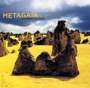

Home Artist links Label link

Metagaia - Phonogenix
| Artist: | Metagaia |
| Title: | Phonogenix |
| Label: | Poseidon PRF-021 |
| Length(s): | 41 minutes |
| Year(s) of release: | 2005 |
| Month of review: | [02/2006] |
Line up
Haruhiko Tsuda - all sintruments except
Masayoshi Murakami - guitars on 1
Toshimichi Isoe - synth programming on 1
Tracks
| 1) | Divinity Rising | 6.46
|
| 2) | Cosmo-sphere | 4.35
|
| 3) | The Star Of D.o.g. | 5.36
|
| 4) | Psyche Of Cloud | 4.44
|
| 5) | The Configuration Of Dance | 4.11
|
| 6) | A Signal Glows In The Dark | 4.30
|
| 7) | Home | 6.11
|
| 8) | Water Harp | 4.53
|
Summary
The music
Even though Metagaia is a project of one Shingetsu member with cooperation of another, there is no musical semblance. All tracks are instrumental, initially pretty much without a dominating style. We hear influences of loungy soft jazz, electronic music, some world influences (of the Enigma type) and some poppy whiffs. The use of guitar synth (or what sounds like it) and other iffy synth sounds at numerous times create a cheese effect (for instance in Cosmo-sphere and Home). The electronic rhythms do not exactly help in preventing this. As the album progresses it floats more and more in the direction of pure EM.
The lingering guitar sound at other times creates the sort of atmosphere found in Terje Rypdal's work (except for those rhythms..), for instance in the first half of The Star Of DOG. Water Harp moves towards Fripptertronics. Psyche Of Cloud has that hissy synth sound Jan Hammer used so often in his Miami Vice tracks, which brings me to another point: a lot of the sounds on this album remind of the electronic scene of the late eighties. Which is fine in itself, if it weren't for the fact that this was recorded and produced between 1995 and 1999.
Conclusion
This album has a number of cheesy moments. And the sounds used are of an era before its recording. I might have been willing to look for excuses for all that, however, had it not been for the poor electronic rhythms. These are just a little on the dominant side, especially if you consider their sound. This is an album that has its spare moments... spoiled by the rhythms. Phonogenix does not live up to its pedigree.
© Roberto Lambooy